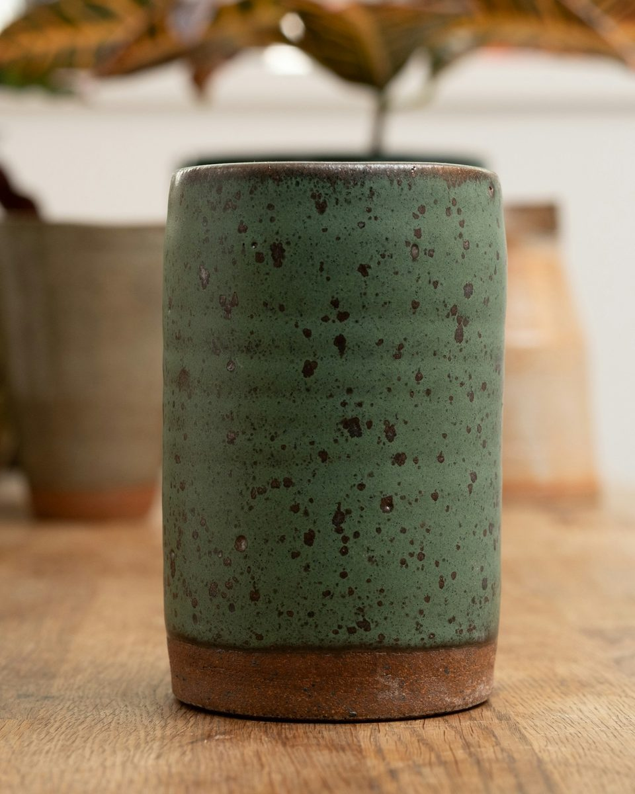
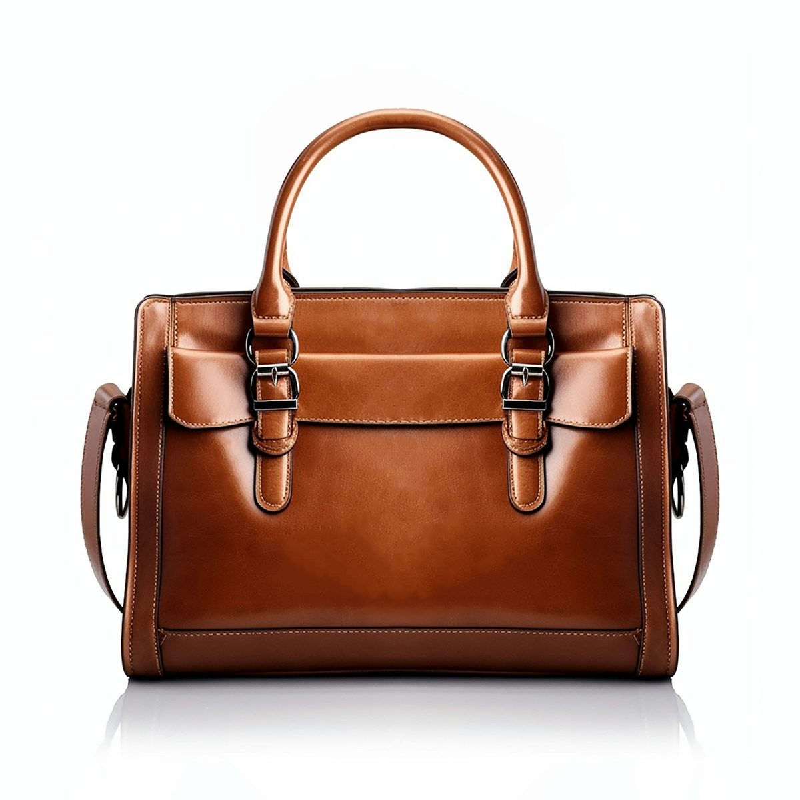
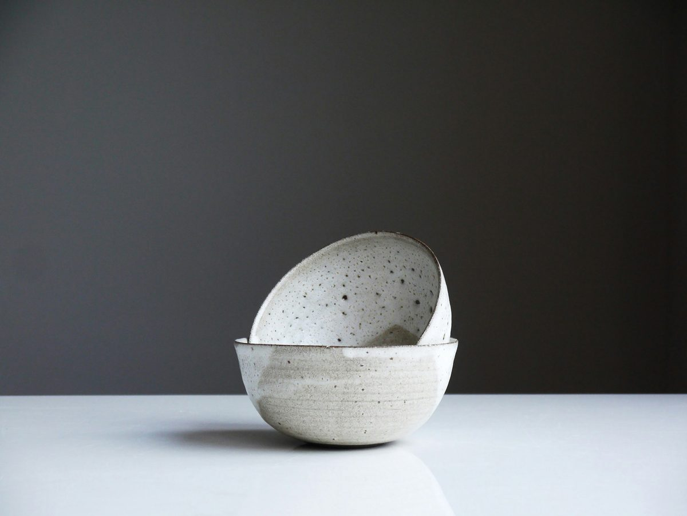
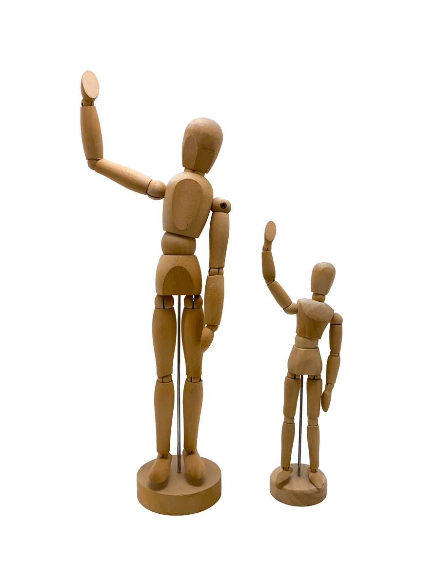
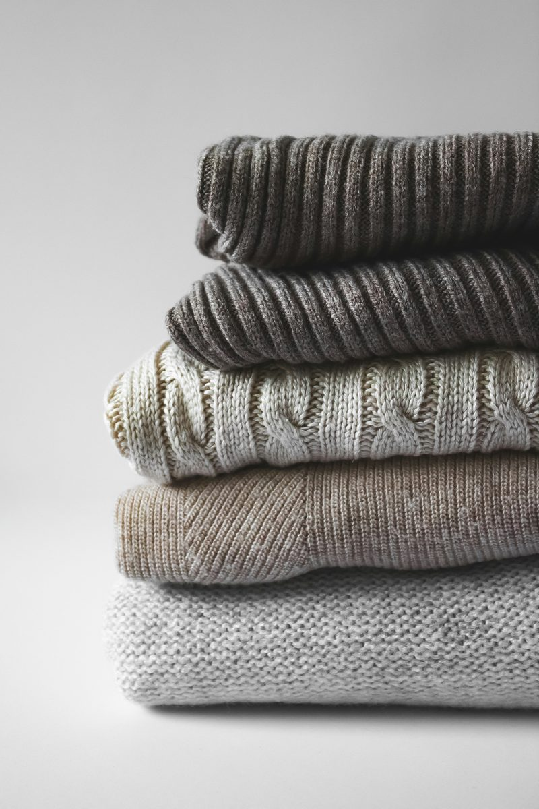
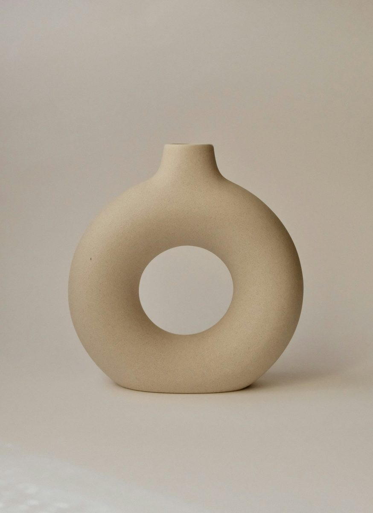

Vitrina

Vaso verde con motas
Cerámica

Bolso de cuero con hebillas
Madera tallada

Dúo de cuencos moteadosEjemplo
Cerámica

Pareja de maniquíes de maderaEjemplo
Madera tallada

Jerséis apilados para el fríoEjemplo
Tejidos de lana

Jarrón dona de cerámica
Cerámica
No hay piezas que coincidan con tu búsqueda.